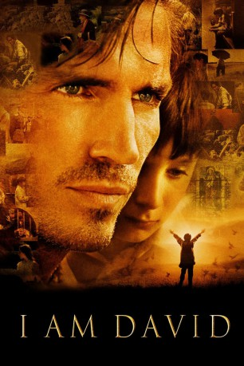

#8150 I Am David
 
 IMDB-Wertung: 7.3 / 10
IMDB-Wertung: 7.3 / 10  Metascore: 0
Metascore: 0 
Freiheit ist für den 12-jährigen David nur ein Traum. Solange er denken kann, lebt er in einem kommunistischen Lager für politische Gefangene ohne zu wissen, wer er ist, wer seine Eltern sind, und wie die Welt dort draußen ist. Alles, was er vom Leben weiß, hat er seinem Mentor und Mithäftling Johannes zu verdanken. Eines Nachts kann David fliehen - mit einem Laib Brot, einem Kompass und einem versiegelten Brief, den er nach Kopenhagen in Dänemark bringen soll.\r Mit dem einzigen Rat, niemandem zu trauen, begibt er sich auf seine abenteuerliche Reise durch viele Länder. David erlebt die Welt in einer Art und Weise, wie er sie sich in seiner Phantasie nie erträumt hätte - Farben, Landschaften, Gerüche, Klänge, Geschmack - alles ist für ihn völlig neu. Er weiß nicht was Geld ist, wie man mit Besteck isst, nicht einmal wie man lächelt. Jeder Tag birgt neue Gefahren und gleichzeitig berauschende Freude. Findet David den Schlüssel zu seiner Identität, und kann er sein Schicksal verändern?
Jahr: 2003
Dauer: 91 Minuten
FSK:
Land: England Studio: UFATonspuren:
Untertitel: Englisch,
Auflösung: 1080p (1920x1080) Größe: 9553 MB
Genre: Drama
Regisseur: Paul Feig
Drehbuch: Anne Holm
Soundtrack: Stewart Copeland
Darsteller:
- Ben Tibber als David
 Jim Caviezel als Johannes
Jim Caviezel als Johannes Maria Bonnevie als David's Mother
Maria Bonnevie als David's Mother Francesco De Vito als Roberto
Francesco De Vito als Roberto Lucy Russell als American Woman
Lucy Russell als American Woman Dobrin Dosev als Border Guard
Dobrin Dosev als Border Guard Paul Feig als American Man
Paul Feig als American Man- Maxim Genchev als Policeman
- Alessandro Sperduti als Carlo
- Valeri Yordanov als Bulgarian Soldier
- Paco Reconti als Giovanni
 Joan Plowright als Sophie
Joan Plowright als Sophie Matt Patresi als Swiss Border Guard
Matt Patresi als Swiss Border Guard- Hristo Shopov als The Man
- Roberto Attias als Baker
- Marin Jivkov als Cecha
- Shaila Rubin als Vineyard Owner
- Robert Syulev als Angelo
- Elisabetta Bartolomei als Woman at Party
- Krasimir Kutzoparov als Camp Officer
- Krassimir Radkov als Party Guest
- Diyan Machev als Party Guest
- Clem Tibber als Young David
- Adrian McCourt als David's Father
- Nikola Rudarov als Store Owner
- Enrico Vecchi als Grocer
- Malin Krastev als Policeman
- Viola Carinci als Maria
- Ivan Nestorov als Swiss Policeman
- Stefan Shterev als Bulgarian Officer
- Silvia De Santis als Elsa
- Panayot Tzanev als Quarry Guar
- Nikolay Kipchev als Truck Driver
- Stephen Antonie Shteref als Communist Protestor
- Paraskeva Djukelova als Young Mother
Datei: X:\2003(G-M)\I Am David (2003, FSK, 1920x1080).mkv seit 31.01.2018
Festplatte: HD 2003-2004-2005(A-F)
 Es gibt insgesamt 33 Filme in der Gruppe '2003(G-M)'
Es gibt insgesamt 33 Filme in der Gruppe '2003(G-M)'